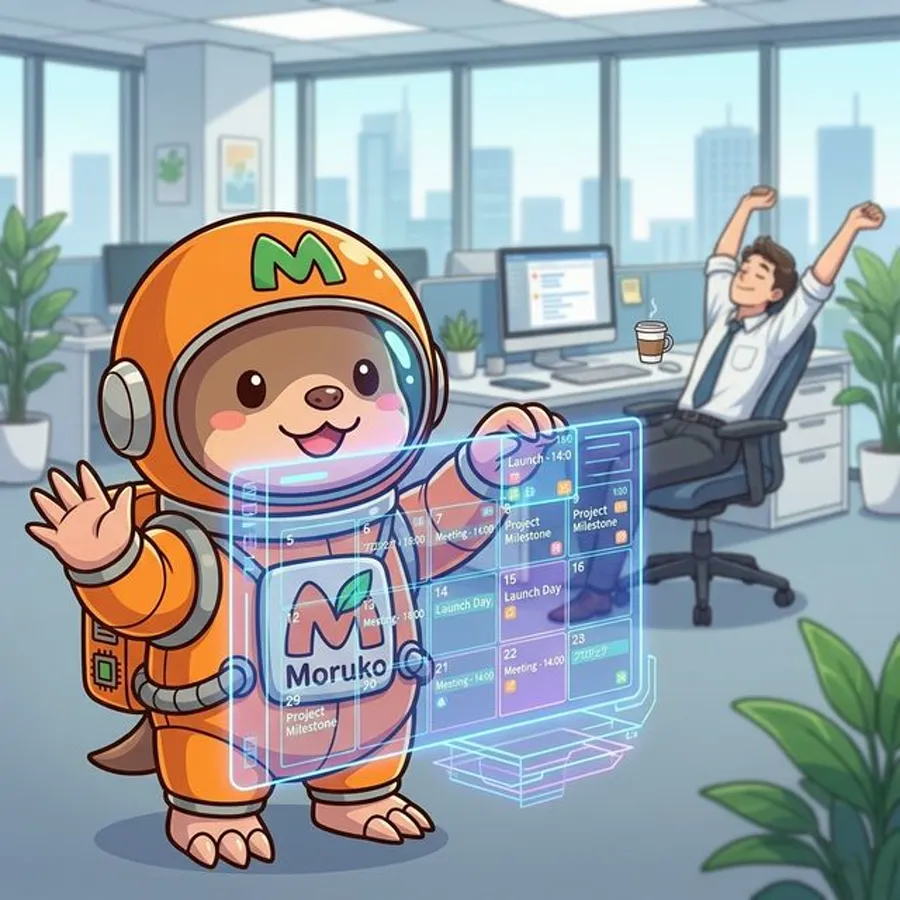
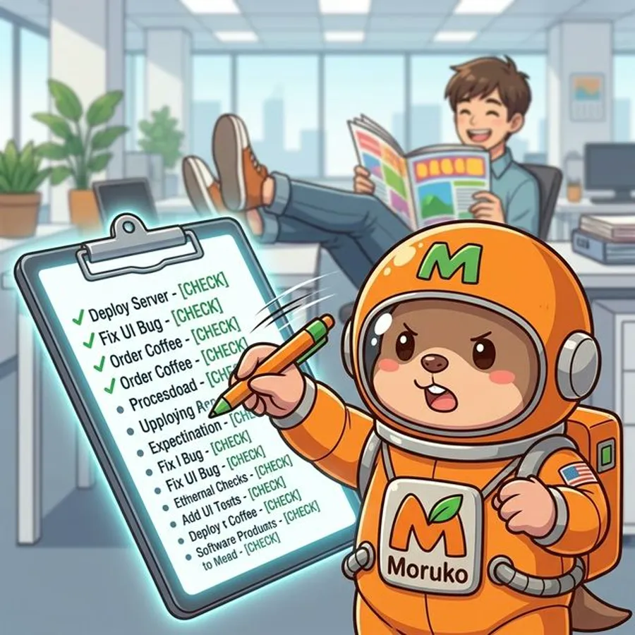
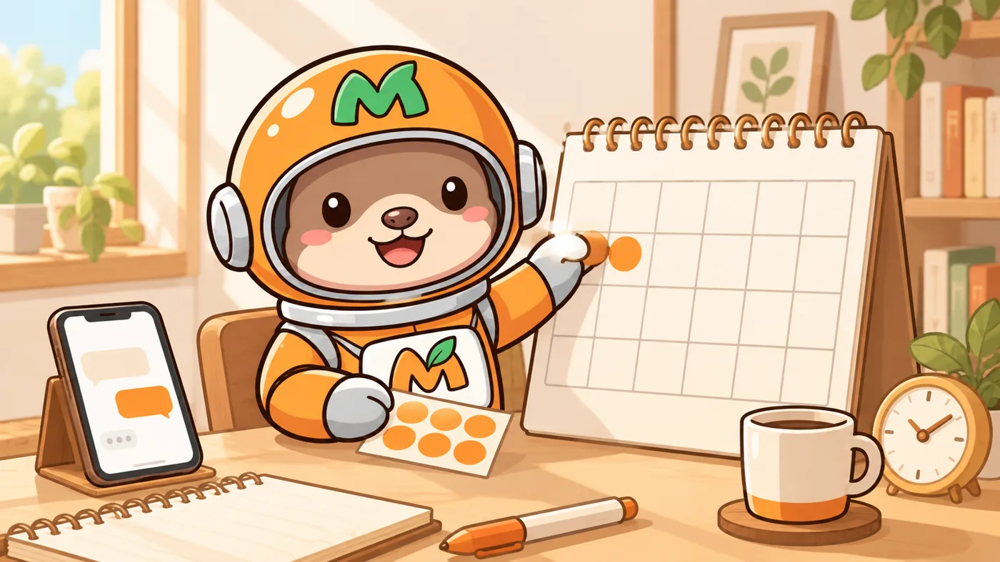

メール管理
「未読100件…」そのストレスをゼロに。重要メールをチェックして返信の下書きまで自動で作成します。
自宅で働く、自分専用のAI秘書
メールの返信、予定の登録、SNSの投稿、動画づくりまで。スマホのチャットで頼むだけで、モルコが代わりにやってくれます。中身を設定済みの小さなパソコンをお届けするので、ご自宅のコンセントに挿せば、24時間働く秘書のできあがりです。
しくみ
難しい操作はありません。いつものチャットの延長で、仕事が一つ進みます。
スマホで頼む → 自宅のミニPCでモルコが働く → 結果がスマホに返る
文字でも、写真でも、スクショでも。Telegram（LINEのようなチャットアプリ）に送るだけ。
送るのは文字だけなので、通信量はわずか。電波が弱い場所でも届きます。
ファイルを読み、調べ、作り、送る。コンセントに挿したまま24時間稼働。
完了報告と成果物が届く。外出先でも仕事が進んでいます。
大事なデータは、手元に。モルコはネット上のどこかではなく、あなたの自宅のパソコンで動きます。作ったファイルもそのパソコンに保存されます。
できること
「未読100件…」そのストレスをゼロに。重要メールをチェックして返信の下書きまで自動で作成します。

「来週どこかで打ち合わせしたい」→ そのままモルコに伝えると、カレンダーに追加＆リマインドまで完了。

ふと思いついたタスクをチャットで送るだけ。優先順位をつけてリスト化し、忘れずに進捗管理します。
毎朝8時に天気・ニュース・今日の予定を自動送信。毎晩23時半には今日の振り返り日記が届きます。
「あのファイルどこだっけ」→ すぐに出てきます。Googleドライブ（ネット上の保管庫）の中を探して、保存も整理もやってくれます。
「これ投稿したい」→ 文章・ハッシュタグ・画像まで完成形で出てきます。テロップ・BGM付き動画も作れます。
スマホだけで完結
モルコは自宅のパソコンで動き、あなたはスマホから頼むだけ。どれも、外出先で実際に使われている頼み方です。
もらった名刺を撮って送るだけ。モルコが読み取って、その日のうちに「本日はありがとうございました」のメールを送ります。

「来週どこかで打ち合わせできますか？」というLINEをスクショして送るだけ。カレンダーの空いている日時を出して返信文を作り、決まったら予定の登録と前日のお知らせまでやっておきます。
「この資料、今すぐ紙で欲しい」と頼むと、コンビニで印刷するためのQRコードが届きます。近くのコンビニのコピー機に読み込ませれば、その場で印刷できます。
電波が弱くても大丈夫。スマホから送るのは文字だけ。通信制限がかかっていても、頼みごとさえ届けば、自宅のモルコが仕事を進めます。
1分でわかるCM動画
文章より早いので、まず1分だけ。実際に使っている人の声は、このすぐ下にあります。
使ってみると、こうなった
「清掃スタッフの『終わりました』報告を毎回LINEでやり取りしてたのが、モルコと10分話しただけでひとつの仕組みに。完了通知も、月ごとの支払い集計も自動になりました」
「保護者から大量に届く時間割の希望を、モルコが重複まで見つけて整理してくれる。個人情報を伏せた時間割も自動で作れて、毎回の講習で使い回せるようになりました」
「毎週の占いコンテンツをモルコが自動で作ってスプレッドシートに溜めてくれる。Instagramの反応の数字も、画面のスクショを送るだけで記録してくれる。何枚もめくれる投稿まで作れて、発信がぐっと楽になりました」
「買っても、使いこなせるか不安です」
答えはいつも同じです。
「モルコに聞いてください」
最初は「これをしたいけど、どうしたら？」という相談がたくさん届きました。返したのは毎回、「モルコに聞いて、やらせてみてください」。それを続けるうちに、宿の予約システムや売上管理システム、ホームページを自分で作るユーザーが出てきました。やり方を調べるのも、作るのも、モルコの仕事です。
作った人

北 祐介Mi-LAI Lab ／ AI講座を開いてきた人
コードは1行も書かず、全部AIと一緒に作りました。だから、あなたも書かなくていい。
いちばん使っているユーザーは、作った本人です。
AIに仕事を頼むには、ずっとパソコンの前に座っていないといけない。気づけば何日も外に出ず、頭も体もくたくたになっていました。
頼みごとはスマホから送るだけ。散歩中も電車の中も、仕事が進むようになりました。今は青春18きっぷで旅をしながら、撮った写真をその場で短い動画にして投稿しています。
スクロールすると「以前」から「以後」へ切り替わります
一度そろえれば、ずっと最新。
かかるのは最初の本体代と、AIの月額利用料 約3,000円だけ。AIは毎月のように賢くなりますが、モルコはその新しい力をそのまま使えます。買い替えなしで、時代に置いていかれません。
正直に
サポート
パソコンの設定も、モルコの準備も、すべて済ませてお届けします。難しい作業は一切ありません。
「チャットアプリって何？」という方でも安心。使い始めの準備から、モルコへの頼み方まで、1対1でお教えします。
モルコはネット上のどこかではなく、あなたの自宅のパソコンで動きます。作ったファイルやデータは、そのパソコンに保存されます。ご返却時はデータをすぐに完全消去します。
導入の流れ
「申し込む」ボタンからフォームに入力。カード払いならその場で決済、銀行振込なら振込先を案内メールでお送りします。入金を確認したら、担当者からご連絡します。
事前にお願いするのは、スマホにチャットアプリ「Telegram」を入れておくことだけ。メールアドレスの作成やAIの申し込みは、初回打ち合わせで画面を見ながら一緒に進めます。
オンラインまたは対面で30〜60分。メールアドレスの作成、アプリの設定、AIの申し込みまで、すべて一緒に進めるので迷いません。入金確認後、7営業日以内に発送します。
設定済みのモルコをお届け。コンセントを挿してネットに繋げば、すぐ使えます。
料金
人を雇えば月30〜50万円。AI導入の専門家に手伝ってもらうと、数十万〜百万円かかることも珍しくありません。モルコは完成品をお届けして買い切り。月額の顧問料もかかりません。
ネットで契約するAI秘書サービスは、毎月払い続ける上に、データを他社に預けることになります。設定だけを頼んでも、動かすパソコンは自分で用意しなければいけません。モルコは設定済みのパソコンが箱で届き、あなたの自宅で動きます。届いたその日から使えて、データは手元に残ります。
設定済みでお届け：ミニPC・モバイルモニター・キーボード・マウス
カード決済は ¥250,000（税込）
PC本体・初期設定・カスタマイズすべて込み
＋ 月々のAI利用料 約¥3,000（Claude Pro／下記参照）
お支払い：銀行振込 ¥240,000／カード決済 ¥250,000（いずれも税込）
入金確認後、7営業日以内に発送
毎月払い続ける。データは他社に預ける。
数十万〜百万円。数ヶ月の手伝いが終わると、手元には何も残らない。
完成品を買い切り¥240,000〜。自宅のミニPCで動き、データは手元に残る。届いたその日から。
※別途 AI サブスクリプション「Claude Pro 以上のプラン」（Pro・Max いずれも可／月額約¥3,000〜）へのご加入が必要です。お申し込み・設定はこちらでご案内します。
※2回目以降の個別サポートは有償（1時間¥3,000／月額¥10,000・月2時間まで、いずれも税込）、独自機能の追加開発は1機能¥10,000（税込）です。条件の詳細は利用契約書をご確認ください。
民泊・学習塾・占い/EC運営など、実際のユーザーの現場で毎日働いています。上の「使ってみると、こうなった」は全部実話です。
届いて終わりではなく、1対1の使い方レクチャー付き。その後も24時間の相談窓口で困りごとに答えます（個別の追加サポートは1時間¥3,000〜、開発は有償）。
モルコには見守り係が同居していて、不調を検知したら自動で復旧を試み、状況をお知らせします。直らないときは遠隔サポートで対応します。
料金・返金・サポート・データの扱いは利用契約書に、返品・キャンセル条件とお支払い方法は特定商取引法に基づく表記に記載しています。不明点は購入前にLINEでご確認ください。
よくある質問
買い切りで、銀行振込なら¥240,000（税込）、カード決済なら¥250,000（税込）です。ミニPC本体・初期設定・カスタマイズ込みで、月額の顧問料はかかりません。独自機能の追加開発などは別途有償です。
AIの月額プラン「Claude Pro」以上（Pro・Max いずれも可／月額約¥3,000〜）へのご加入が別途必要です。お客様ご自身でのご契約になりますが、加入手順は初回打ち合わせで一緒に進めます。
設定済みのミニPC本体に、モバイルモニター・キーボード・マウスが付属します。1対1の使い方レクチャーと、24時間の相談窓口も含まれます。
お申し込み・お支払いのあと、オンラインの利用契約書 同意フォームへのご記入（担当者からご案内します）と、スマホへのチャットアプリ「Telegram」のインストールをお願いします。初回打ち合わせ（オンラインまたは対面で30〜60分）でメールアドレスやAIの申し込みなどを一緒に進め、入金確認後、7営業日以内に発送します。届いたらコンセントを挿してネットに繋ぐだけで使えます。
銀行振込（¥240,000）とカード決済（¥250,000・税込）に対応しています。カードはお申し込みフォームからそのまま決済、銀行振込は振込先を確認メールでお知らせします。お申し込みはこちら
設定はすべて済ませてお届けし、1対1の使い方レクチャーも付いています。その後も24時間の相談窓口で困りごとに答えます（個別の追加サポートは1時間¥3,000〜、開発は有償）。不調は見守り係が自動で復旧を試み、直らないときは遠隔サポートで対応します。
モルコはネット上のどこかではなく、あなたの自宅のパソコンで動き、データもそのパソコンに保存されます。ただし、AIに頼んだ内容とその返事は、AIを提供している会社（Anthropic社）のサーバーを経由します（利用契約書 第5条）。
初期設定済みのミニPCという商品の性質上、お申し込み後の解約・返金は原則お受けできません。ただし、納品後7日以内に動作不良が認められた場合は、当方の責任で修理・交換します。条件は利用契約書と特定商取引法に基づく表記に記載しています。不安な点は、申し込む前にLINEでご相談ください。
サポートコミュニティ
モルコユーザー限定のサポートコミュニティ。使い方のシェア・自動化のアイデア・困ったときの相談まで、同じ環境で使っている仲間がいます。
コミュニティを見るまずは無料相談から
AIが仕事を引き受けてくれる時代は、
もう来ています。
— モルコを作った 北 祐介
まずは30分。今いちばん時間のかかっている仕事を教えてください。そこから、モルコがどこまで役に立てるか一緒に考えます。